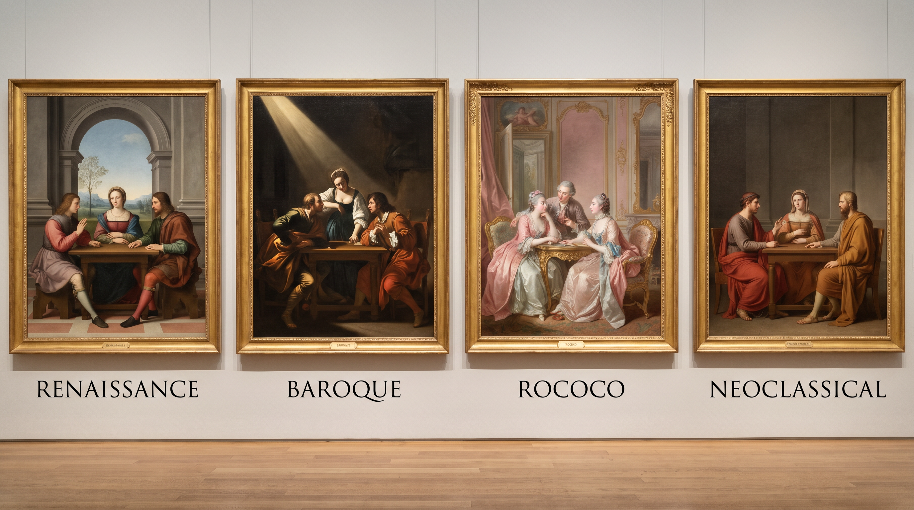

四百年、四次反动——以及为什么它们在模型眼里全都是"一张发黄的老油画"
这四个流派几乎总是被当成四个并列的风格标签使用，这是提示词写不准的根源。它们其实是一条因果链：每一代都在反对上一代最用力的地方。而"反对什么"这件事，恰恰给了我们最好的提示词素材——一个流派最独特的形式特征，往往就出现在它反对的那个位置上。
| 流派 | 大致时段 | 它在反对 | 反对的手段（= 形式特征） |
|---|---|---|---|
| 文艺复兴 | 15–16 世纪 | 中世纪的金底、平面、按重要性定大小 | 线性透视、可测量的空间、稳定的几何构图 |
| 巴洛克 | 17 世纪 | 盛期文艺复兴的静穆均衡、样式主义的做作 | 对角动势、强光深影、抓取动作的瞬间 |
| 洛可可 | 18 世纪前中期 | 巴洛克的沉重、宏大、国家与教会的庄严 | 粉彩高调、C 形曲线、不对称、私密题材 |
| 新古典 | 18 世纪后期–19 世纪初 | 洛可可的轻佻与道德真空 | 水平垂直骨架、清晰轮廓、克制色彩、道德叙事 |
注意这条链的形状：秩序 → 动势 → 装饰 → 回归秩序。新古典打击洛可可用的武器，很大程度上是文艺复兴用过的那套（几何、轮廓、克制），只是换了一批古代范本——18 世纪中期赫库兰尼姆与庞贝的发掘、以及温克尔曼对希腊艺术的推崇，给了这次"回归"新的实物依据。
如果你只写 baroque painting，你在指称一个大集群；但如果你写 a single raking light source, ninety percent of the canvas in near-black，你在指称卡拉瓦乔用来反对文艺复兴均匀布光的那个具体动作。
后者稳定得多，因为它是物理层的（光位 + 对比度），不依赖模型对流派名的理解质量。本章所有提示词的骨架，都是"流派名（指称）+ 该流派的反对动作（物理描述）"。
核心成就是线性透视——布鲁内莱斯基在 1420 年代做的演示，阿尔贝蒂在《论绘画》（1435）里写成可传授的方法。它的革命性不在"看起来像真的"，而在于画面空间第一次成为一个统一的、可计算的坐标系：所有物体共享同一套缩减规则，人物的大小由所处位置决定，而不再由身份重要性决定。
另外，画面整体是均匀可读的：背景往往有一片空气透视处理的远景（越远越蓝、越淡、对比越低），前景细节清晰。没有任何地方被牺牲掉。
three figures arranged in a stable pyramid, the apex a seated woman's head, broad base of drapery, low centre of gravity, calm frontal poses, a receding tiled floor and a distant blue-hazed river valley through an arched opening, even diffuse daylight from the upper left, gentle falloff, shadows retain full detail, sfumato: contours dissolve softly into shadow with no hard edges, forms still solid, saturated local colour — lapis blue and vermilion drapery, no overall colour cast, High Renaissance panel painting, oil and tempera, one-point linear perspective, everything legible from foreground to background, centred symmetrical composition, eye level
模型：MJ v8.1 · --ar 3:4 · 无负面词
| 片段 | 作用 |
|---|---|
stable pyramid, low centre of gravity | 构图几何。这是与巴洛克拉开距离的第一道保险 |
even diffuse daylight, shadows retain full detail | 与巴洛克拉开距离的第二道，也是最有效的一道 |
contours dissolve softly ... forms still solid | 把 sfumato 拆成"边缘软 + 形体实"，防止退化成虚焦 |
saturated local colour ... no overall colour cast | 对抗"老油画滤镜"，见下方警告框 |
everything legible | 文艺复兴不牺牲任何区域，与巴洛克的"吞掉大半画面"正相反 |
模型对"古典油画"的默认输出总是罩着一层黄褐调。这层颜色的来源不是画家的选择，而是几百年氧化变黄的天然树脂光油，加上油画媒介本身的泛黄。西斯廷天顶画 1980 年代清洗后露出的是极其明亮的粉、绿、黄——与清洗前的印象判若两画。
也就是说：模型学到的"古典 = 昏黄"，学的是文物的当前状态，不是作品的原始面貌。
想要哪种，你自己选，但要显式声明：
· 要原貌：clean saturated pigments, no yellowed varnish, no sepia cast
· 要文物感：aged darkened varnish, fine craquelure, museum patina
不写，你拿到的永远是后者，而且是它劣化过的版本——脏而不是旧。
文艺复兴画的是"状态"，巴洛克画的是"事件正在发生的那一秒"。这个转变落到形式上，主要是三件事。
卡拉瓦乔（1571–1610）的做法：一束强而窄的光从画外高处斜射进来，其余全部沉入接近纯黑。这不是普通的明暗对照，区别在于暗部不再保留信息——它是实心的黑，直接吞掉背景、吞掉次要人物的大半身体。
它的效果机制很直接：观众的注意力被剥夺了选择权。画面里只有被照亮的那几平方厘米是可读的，你的眼睛别无去处。同时因为背景不可读，事件失去了环境和时间坐标，显得更逼近、更当下。
提示词的关键在于量化暗部占比，这是最容易被忽略也最决定成败的一项：
a single hard raking light from high camera-left, entering from outside the frame, roughly eighty percent of the canvas falls to near-black with no readable detail, lit areas jump to near-white on the cheekbone and knuckles, no fill light, no rim light, background completely swallowed
no fill light 这句必须写。模型的默认打光习惯（继承自商业摄影和影视）是永远给暗部补一点光，不否定它，你得到的是"暗调布光的影棚人像"，那不是卡拉瓦乔。
文艺复兴的主轴是水平与垂直（稳定），巴洛克把主轴旋转到对角线，并让形体沿这条线扭转、伸出画外。人物常处于失衡姿态——正在跌倒、正在被抓住、正在转身。构图的封闭性也被打破：肢体、武器、布幔越过画框边缘，暗示画面之外还有空间。
the main axis runs corner to corner, bodies twisting along it, an outstretched arm crosses and exits the frame edge, figures caught off-balance mid-movement, drapery still in flight
巴洛克不只有卡拉瓦乔那种黑。鲁本斯（1577–1640）代表另一极：画面是亮的、暖的、饱满的，肉体丰腴，皮肤上有明显的珍珠白与冷灰的次表面反光，构图是巨大的旋涡而非单一对角线，人与马与织物纠缠成翻滚的团块。写"巴洛克"时如果不指定这一支，你默认会拿到卡拉瓦乔那一支。
rubensian baroque: warm luminous flesh with pearly cool half-tones, abundant fleshy bodies, a churning circular swirl of figures and horses, rich crimson and gold drapery, overall high-key not tenebrist
two men at a plain wooden table, one recoiling backward, chair tipping, the moment of recognition, caught mid-gesture, a single hard raking light from high camera-left entering from outside the frame, about eighty percent of the canvas in near-black with no readable detail, no fill light, no rim light, background completely swallowed by darkness, specular highlights on the forehead, knuckles and a glass rim, coarse everyday fabric, dirt under the fingernails, unidealised faces, the main axis running corner to corner, an arm crossing the frame edge, Italian Baroque oil painting, tenebrism, close cropped, figures pushed forward to the picture plane, eye level
模型：MJ v8.1 · --ar 4:3 · 无负面词
unidealised faces, dirt under the fingernails 不是装饰性细节。卡拉瓦乔用市井人物当模特画圣徒，这在当时是引起争议的做法，也是他与文艺复兴理想化人体最直接的分野。写进提示词能有效阻止模型套用"标准古典美人脸"。
洛可可的转变首先是场所和赞助人的转变：从教堂与宫廷仪典空间，转入巴黎贵族宅邸的私人沙龙。画幅变小，题材从殉道与神迹变成调情、音乐、郊游、梳妆。既然要挂在浅色木饰面的小房间里，画就不能再是一块吞光的黑板。
elegantly dressed figures idling in a wooded park at the end of the day, a lute, a discarded fan, statues half hidden in foliage, no clear narrative, soft high-key light, low contrast, no true black anywhere in the frame, pale rose, powder blue, cream and silver-grey palette with gilt accents, shimmering silk with fine broken highlights, feathery loose foliage, every contour on a continuous C-curve and S-curve, no straight lines, no right angles, asymmetrical composition, weight pushed to one side, the other side opening into hazy park, French Rococo oil painting, fête galante, small cabinet picture, a faint melancholy under the gaiety, horizontal composition, slightly elevated viewpoint
模型：Nano Banana Pro · 3:2 · 提示词按自然语言长句写，无需权重
| 片段 | 作用 |
|---|---|
no true black anywhere | 整章最有效的单句之一。它一句话切断了巴洛克，也切断了"古典油画 = 暗"的默认 |
no straight lines, no right angles | 把 C 形曲线变成可执行的否定指令，比 ornate curves 稳得多 |
asymmetrical, weight pushed to one side | 模型的默认构图强烈趋向居中对称，必须显式打破 |
no clear narrative / faint melancholy | 雅宴画的题眼。少了这句会得到一张欢快的角色合影 |
洛可可被批评为轻浮、腐败、无道德内容，而启蒙时代要的是公民美德。达维特（1748–1825）的《荷拉斯兄弟之誓》（1784）是转折点式的作品，它的形式选择几乎每一项都在反着洛可可来：
| 洛可可 | 新古典 | |
|---|---|---|
| 骨架 | 连续曲线、不对称 | 水平与垂直，人物列成横向浅浮雕带，背后是罗马拱与列柱 |
| 轮廓 | 柔化、闪烁、消融在光里 | 硬边、清晰，形体像雕塑一样可触 |
| 笔触 | 可见、松、有闪光 | 抹平，几乎看不见笔迹（这一点在安格尔手上更极致） |
| 色彩 | 粉彩满布、装饰性 | 克制的褐、石灰白、钢灰，只留少数高饱和（常是一块红）作重音 |
| 空间 | 纵深模糊的林园 | 浅台式空间，像舞台，背景是封闭的建筑面 |
| 内容 | 调情、闲游 | 誓言、牺牲、责任高于亲情 |
"浅台式空间"（shallow stage）这一项在提示词里格外好用，因为它是纯粹的空间指令：人物几乎全部排在同一个前景平面上，背后一堵墙把纵深切断。这与巴洛克把人物推向观众、洛可可让空间散入远景，都不一样。
three men reaching forward to swear an oath, arms extended in parallel, women collapsed in grief at the right, physically separated from the men, figures aligned across a single shallow foreground plane like a stone frieze, a bare Roman arcade closing off the space behind them, no distant view, even clear cool daylight, moderate contrast, shadows crisp and legible, sharp continuous contours, sculptural modelling, smooth invisible brushwork, restrained palette of stone grey, ochre and bone white, one saturated red cloak as accent, Neoclassical history painting, horizontal-vertical compositional grid, moral gravity, no decorative flourish, frontal, eye level, wide horizontal composition
模型：FLUX.2 · 3:2 · CFG 取中位
arms extended in parallel 和 aligned across a single shallow foreground plane 这两句在替 Neoclassical 干活。只写流派名，模型有很大概率给你希腊白大理石雕像或帕特农神庙——原因见下一节。
这是本章最实用的一节。baroque、rococo、neoclassical 这三个词在互联网上的绝对高频用法不是绘画流派，而是装修风格和商品描述：巴洛克镜框、洛可可梳妆台、新古典客厅。训练数据里这类图的数量远超美术馆藏品图。
| 你写的 | 大概率得到的 | 成因 | 绕过 |
|---|---|---|---|
baroque | 金色卷草纹画框、繁复雕花、巴洛克风室内 | 被装饰/家居语义占据 | 必带 oil painting 或 tenebrism，并写光位与暗部占比。宁可完全不写 baroque，只写 a single raking light, eighty percent near-black |
rococo | 洛可可家具、贝壳纹墙板、粉色婚礼布景 | 同上，且被婚庆审美强化 | 加 fête galante、cabinet oil painting，并写明是户外林园人物场景 |
neoclassical | 白色列柱建筑、大理石雕像、极简高级感住宅 | 建筑语义远强于绘画语义 | 写 Neoclassical history painting（补 history painting 是关键），加浅台空间与横向排列 |
renaissance | 泛化的"发黄的老肖像"，或直接是拉斐尔前派、维多利亚学院画 | "古典油画"大集群的重心 | 写透视方式（one-point linear perspective, receding tiled floor）与均匀布光 |
| 四者任意一个单独使用 | 同一锅"古典油画"：昏黄清漆 + 中等强度侧光 + 居中人像 | 四个集群在特征空间里高度重叠，模型取了公共部分 | 见下方"三把刀" |
不要靠流派名区分，靠这三组互斥的物理参数。任意一张图，只要这三项对了，流派就跑不掉：
| 1 · 暗部占比与补光 | 2 · 构图主轴 | 3 · 色彩 | |
|---|---|---|---|
| 文艺复兴 | 约 20%，暗部有细节 | 金字塔 / 中轴对称 | 高饱和局部色，无统一色偏 |
| 巴洛克 | 70–90%，实心黑，无补光 | 对角线，冲出画框 | 暖褐 + 少数高饱和重音 |
| 洛可可 | 几乎为 0，无纯黑 | C/S 曲线，不对称 | 粉彩全域 + 金 |
| 新古典 | 约 30%，边缘锐利 | 水平垂直网格，浅台 | 灰调 + 单点纯红 |
实践建议：先只用这三项写一条完全不含流派名的提示词，跑一次。如果结果已经站在对的地方，再把流派名加上去做加强；如果加了名字反而跑偏（很常见，尤其是 baroque 和 rococo），就把名字丢掉。流派名是可选项，形式特征不是。
